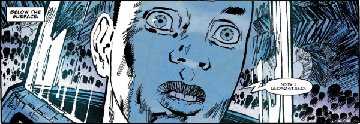

A specialist Brit-Cit Judge that later transferred to Mega-City One and worked closely with Dredd investigating the corrupt deep cover operative Judge Smiley.
Art by Henry Flint
| Story Title | Parts | Pages | w indicates a wraparound coverCovers | Year(s) | Issues | Writer | Artist | Colourist | Letterer |
|---|---|---|---|---|---|---|---|---|---|
From Judge Dredd Sequel to Enceladus: New Life (1924‑1928)Enceladus: Old Life | 8 | 51 | 1940: Greg Staples 1942: Glenn Fabry (Colours: Ryan Brown) 1945: Jake Lynch 1947: Henry Flint4 | 2015 | 1940-1947 | Rob Williams | Henry Flint, D'Israeli (e4p4) | <-- | Annie Parkhouse |
From Judge DreddAct of Grud | 3 | 18 | 2006: Henry Flint 1 | 2016 | 2004-2006 | Rob Williams | Henry Flint | <-- | Annie Parkhouse |
From Judge DreddThe Small House | 10 | 62 | 2102: Cliff Robinson & Dylan Teague 2104: Jake Lynch 2 | 2018 | 2100-2109 | Rob Williams | Henry Flint | Chris Blythe | Annie Parkhouse |
| year | episodes | pages |
| 2001 | 0 | 0 |
| 2002 | 0 | 0 |
| 2003 | 0 | 0 |
| 2004 | 0 | 0 |
| 2005 | 0 | 0 |
| 2006 | 0 | 0 |
| 2007 | 0 | 0 |
| 2008 | 0 | 0 |
| 2009 | 0 | 0 |
| 2010 | 0 | 0 |
| 2011 | 0 | 0 |
| 2012 | 0 | 0 |
| 2013 | 0 | 0 |
| 2014 | 0 | 0 |
| 2015 | 8 | 51 |
| 2016 | 3 | 18 |
| 2017 | 0 | 0 |
| 2018 | 10 | 62 |
| 2019 | 0 | 0 |
| 2020 | 0 | 0 |
| 2021 | 0 | 0 |